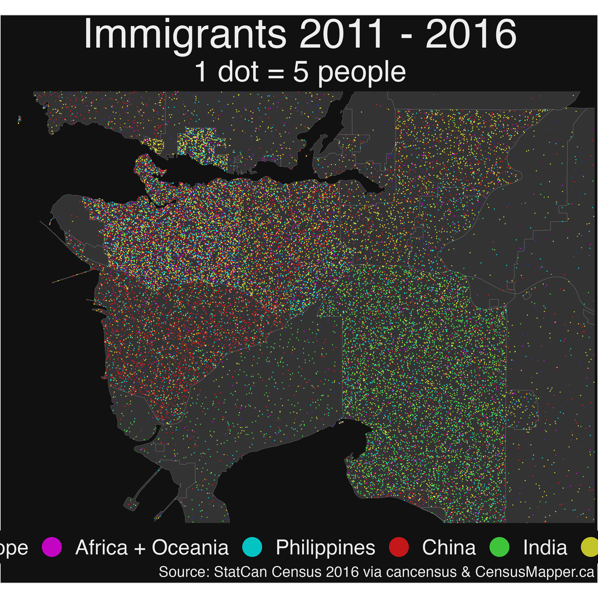
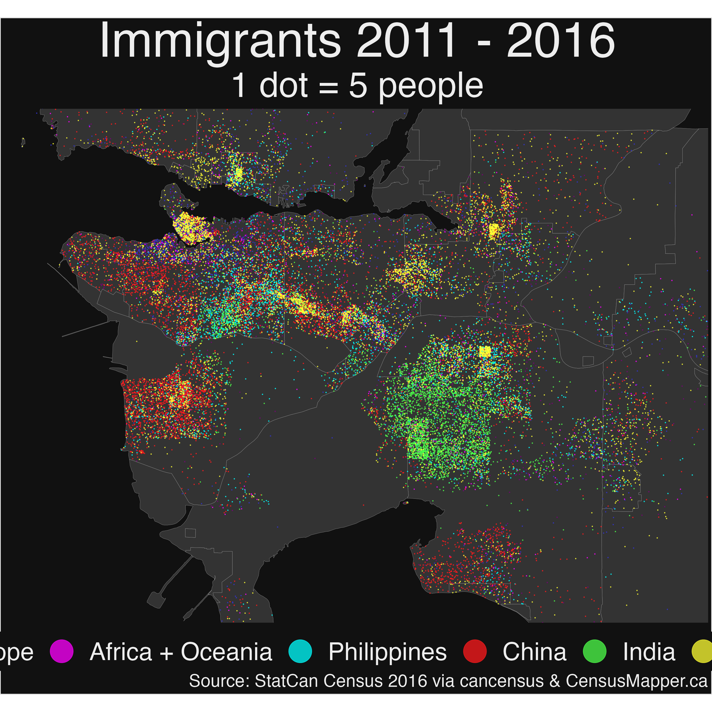
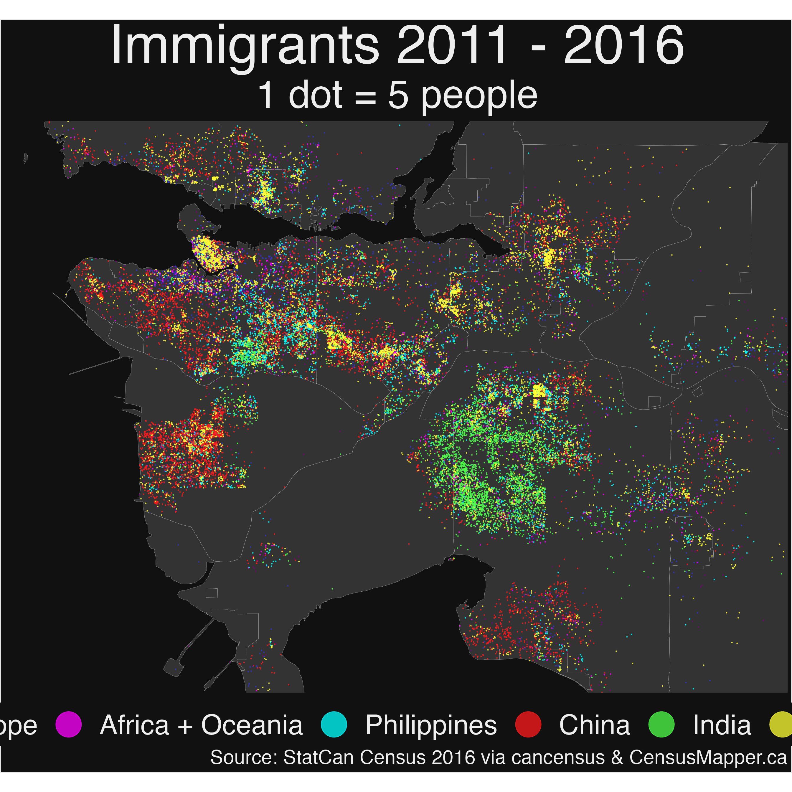

Recent Immigrants
Jens von Bergmann
2017-08-26
Source:vignettes/recent_immigrants.Rmd
recent_immigrants.RmdMulti-category dot-density maps often work well when the categories cluster geographically. Recent immigrants by country of origin work well for this. ## Data First we grab the immigrant data via cancensus, making use of the CensusMapper API tool to select the regions and variables we need.
#devtools::install_github("mountainmath/cancensus")
library(cancensus)
library(dotdensity)
library(tidyverse)
library(sf)
# options(cancensus.api_key='your_api_key')
regions=list(CMA="59933")
vectors_2011=c("v_CA11N_265","v_CA11N_268","v_CA11N_304","v_CA11N_334","v_CA11N_373","v_CA11N_376","v_CA11N_379","v_CA11N_382")
vectors=c("v_CA16_3636","v_CA16_3639","v_CA16_3669","v_CA16_3699","v_CA16_3741","v_CA16_3810","v_CA16_3750","v_CA16_3756","v_CA16_3783")We choose the categories and colours we want to map and define a convenience function to rename the variables and compute the qantities for the other asian countries that we don’t break out.
categories=c("Americas","Europe","Africa + Oceania","Philippines","China","India","Other Asian Countries")
colors=c("#7a0177", "#3333cc", "#ff00ff", "#00ffff", "#ff1a1c", "#4dff4a", "#ffff33")
prep_data <- function(geo){
data <- geo %>% replace(is.na(.), 0)
data <- rename(data,
total=v_CA16_3636,
Americas=v_CA16_3639,
Europe=v_CA16_3669,
Philippines=v_CA16_3783,
China=v_CA16_3750,
India=v_CA16_3756)
data %>% mutate(`Other Asian Countries` = v_CA16_3741-Philippines-China-India,
`Africa + Oceania`=v_CA16_3699 + v_CA16_3810)
}
prep_data_2011 <- function(geo){
data <- geo %>% replace(is.na(.), 0)
data <- rename(data,
total=v_CA11N_265,
Americas=v_CA11N_268,
Europe=v_CA11N_304,
Africa=v_CA11N_334,
Philippines=v_CA11N_376,
China=v_CA11N_379,
India=v_CA11N_382)
data %>% mutate(`Other Asian Countries` = v_CA11N_373-Philippines-China-India)
}Next we grab the data via cancensus,
data_csd=get_census(dataset = 'CA16', regions=regions,vectors=vectors,geo_format='sf',labels='short',level='CSD') %>% prep_data
data_ct=get_census(dataset = 'CA16', regions=regions,vectors=vectors,geo_format='sf',labels='short',level='CT') %>% prep_data
data_da=get_census(dataset = 'CA16', regions=regions,vectors=vectors,geo_format='sf',labels='short',level='DA') %>% prep_data
data_db=get_census(dataset = 'CA16', regions=regions,geo_format='sf',labels='short',level='DB')which we then re-aggregate to make sure we don’t miss overall counts due to privacy cutoffs distribute them proportionally among the population.
# ct level data does not always align with CSD, so use care when doing this
data_ct <- proportional_re_aggregate(data=data_ct,parent_data=data_csd,geo_match=setNames("GeoUID","CSD_UID"),categories=categories,base="Population")
data_da <- proportional_re_aggregate(data=data_da,parent_data=data_ct,geo_match=setNames("GeoUID","CT_UID"),categories=categories,base="Population")
data_db <- proportional_re_aggregate(data=data_db,parent_data=data_da,geo_match=setNames("GeoUID","DA_UID"),categories=categories,base="Population")##Map All that’s left to do is to covert our re-aggregated
block-level data to dots, using the compute_dots function
from the dotdensity
package and add the result to the basemap. As a scale we take one
dot to represent 5 people.
scale=5 # 1 dot = 5 immigrants
basemap <- ggplot(data_csd) +
geom_sf(fill = base_color, size=0.1, color = 'grey') +
guides(colour = guide_legend(nrow=1,override.aes = list(size=15))) +
theme_opts +
scale_colour_manual(values = colors) +
labs(color = "", title="Immigrants 2011 - 2016",
caption="Source: StatCan Census 2016 via cancensus & CensusMapper.ca",
subtitle = paste0("1 dot = ",scale," people"))To better understand the effect of the proportional_reaggregate function we show the dot-density maps using data from different aggregation levels.
CSD level
dots <- compute_dots(geo_data = data_csd, categories = categories, scale=scale) %>% st_as_sf
basemap +
geom_sf(data=dots,aes(color=Category),alpha=0.75,size=0.25,show.legend = "point") +
theme_opts
ggsave('../images/recent_immigrants_CSD.png',width=26,height=26)CT Level Data
dots <- compute_dots(geo_data = data_ct, categories = categories, scale=scale) %>% st_as_sf
basemap +
geom_sf(data=dots,aes(color=Category),alpha=0.75,size=0.25,show.legend = "point") +
theme_opts
ggsave('../images/recent_immigrants_CT.png',width=26,height=26)DA Level Data
dots <- compute_dots(geo_data = data_da, categories = categories, scale=scale) %>% st_as_sf
basemap +
geom_sf(data=dots,aes(color=Category),alpha=0.75,size=0.25,show.legend = "point") +
theme_opts
ggsave('../images/recent_immigrants_DA.png',width=26,height=26)DB Level Data
dots <- compute_dots(geo_data = data_db, categories = categories, scale=scale) %>% st_as_sf
basemap +
geom_sf(data=dots,aes(color=Category),alpha=0.75,size=0.25,show.legend = "point") +
theme_opts
ggsave('../images/recent_immigrants_DB.png',width=26,height=26)